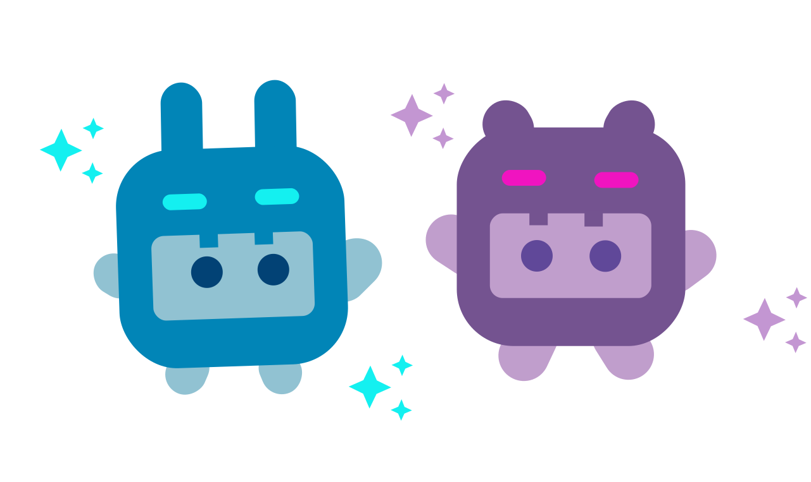
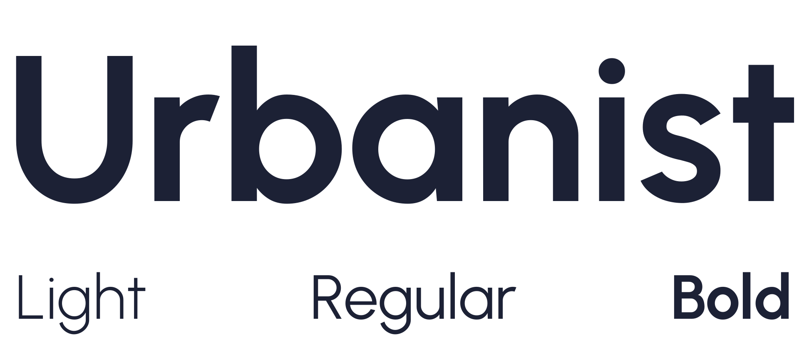
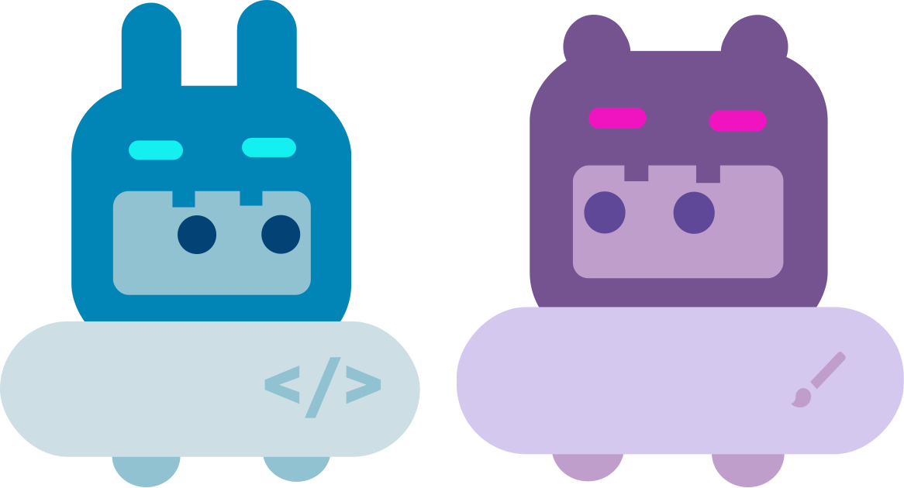

ET's Planet
Website Project
My personal portfolio
Code and designed by myself
Introduction
I have always wanted to learn web development, and what better way to practice than to embark on a project myself? ET’s Planet is my own personal website portfolio, created with the intention of showcasing my personal projects and achievements. While there is certainly a huge room for improvement, it is a realistic and fruitful project that allowed me to practice what I have learnt from online resources.
Design
Most people associate ET with extraterrestrials, or commonly known as aliens. However, ET is also an acronym for my name, Eugene Tang. Since the aim of the website is to introduce myself and my work to people, I decided to use the concept of aliens and planets for the theme of the website. I self-designed the two alien characters and the relevant graphics that can be seen in the different web pages.
The following also illustrate my chosen color palette and typography for a consistent look and feel across the website.
Code
This is the first web development project that I had embarked on. I self picked up HTML, CSS and basic Javascript using online resources such as The Odin Project and YouTube. This website is created from scratch using these 3 technologies (to be exact, I used SASS instead of CSS for the ease of nesting CSS rules, but syntax follows mainly that of CSS).
- For the layout, I relied on CSS Flex and CSS Grid, depending on the requirements and contents of the web page.
- For responsive web design, I utilised media queries extensively to ensure that my website looks presentable on various screen resolutions.
- For interactivity such as the hamburger menu for mobile interfaces and image pop ups, I used basic Javascript to implement them.
- For hosting of the website, I relied on GitHub Pages which allowed me to easily make changes and publish updates from my repository.
Reflection
There is much more for me to learn and improve on in the domain of web development. There is certainly shortcomings in this website, but the main intention was to practice what I have learnt and get a taste of web development. In the future, while I update this website to keep the content relevant, I would also look forward to learning more about HTML, CSS and Javascript, while exploring about frameworks such as React as well.
